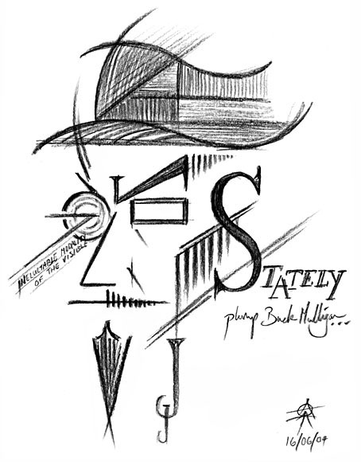

УЛИСС Джеймса Джойса
14. Библиография
Աստվածաշունչ (photocopy from 1896, UBS Stuttgart, 1989)
Anderson, C. G., James Joyce (1986)
Arnold, Bruce, The Scandal of Ulysses: The Sensational Life of a 20th-century Masterpiece (1992)
Attridge, Derek, ed., The Cambridge Companion to James Joyce (1990)
Bell, R. H., Joco Serious Joyce (1991)
Benstock, Bernard, ed., The Seventh of Joyce (1982)
Bishop, John, Joyce's Book of the Dark: Finnegan's Wake (1986)
Bloom, Harold, ed., James Joyce (New York: Chelsea House, 1986)
Burgess, Anthony, Joysprick: An Introduction to the Language of James Joyce (1975)
Campbell, Joseph, and Robinson, H. M., A Skeleton Key to Finnegans Wake (1977)
Costello, P., James Joyce: The Years of Growth, 1882-1915 (1993)
De Quincey, Thomas, On Knocking at the Gates in Macbeth (1978)
Deming, R., James Joyce (1987)
Ellmann, Richard, James Joyce, rev. ed. (1982)
Fargnoli, A. Nicholas, and Gillespie, Michael P., James Joyce A to Z: The Essential Reference to the Life and Work (New York: Facts On File, 1995)
French, Marilyn, The Book as World: James Joyce's Ulysses (New York: Paragon House, 1993)
Gilbert, Stuart, James Joyce's Ulysses, 2d ed. (1955)
Groden, Michael, Ulysses in Progress (1987)
Jaffares, A. Norman, and Kennelly, Brandan, ed., Joycechoyce: The Poems in Verse and Prose of James Joyce (Schull, West Cork: Roberts Rinehart, 1992)
Joyce, James, Letters, 3 vols., vol. 1, ed. by Stuart Gilbert (1957)
Kain, Richard, Fabulous Voyager (1947)
Kenner, Hugh, Dublin's Joyce (1987)
Levin, Harry, James Joyce; A Critical Introduction (1960)
Litz, A. Walton, James Joyce (1964)
Maddox, Brenda, Nora (1988)
Peake, Charles, James Joyce: The Citizen and the Artist (1977)
Potts, Willard, ed., Portraits of the Artist in Exile: Recollections of James Joyce by Europeans (1979; repr. 1986)
Scott, Bonnie K., James Joyce (1987)
Sultan, Stanley, Eliot, Joyce and Company (New York: Oxford UP, 1987)
Гумилев, Николай, Избранное (Москва: "Просвещение" 1990)
Дьяконова Н. Я., Амелина Т. А., Хрестоматия по английской литературе XIX века (Москва: "Просвещение" 1978)
КОРАН пер. Крачковский, И. Ю. (Баку Язычы 1990)
